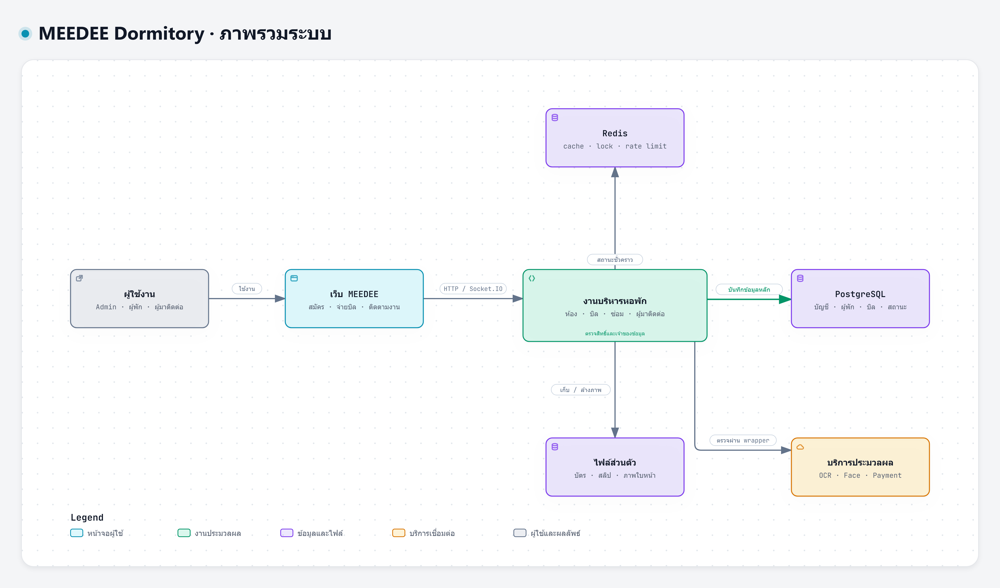
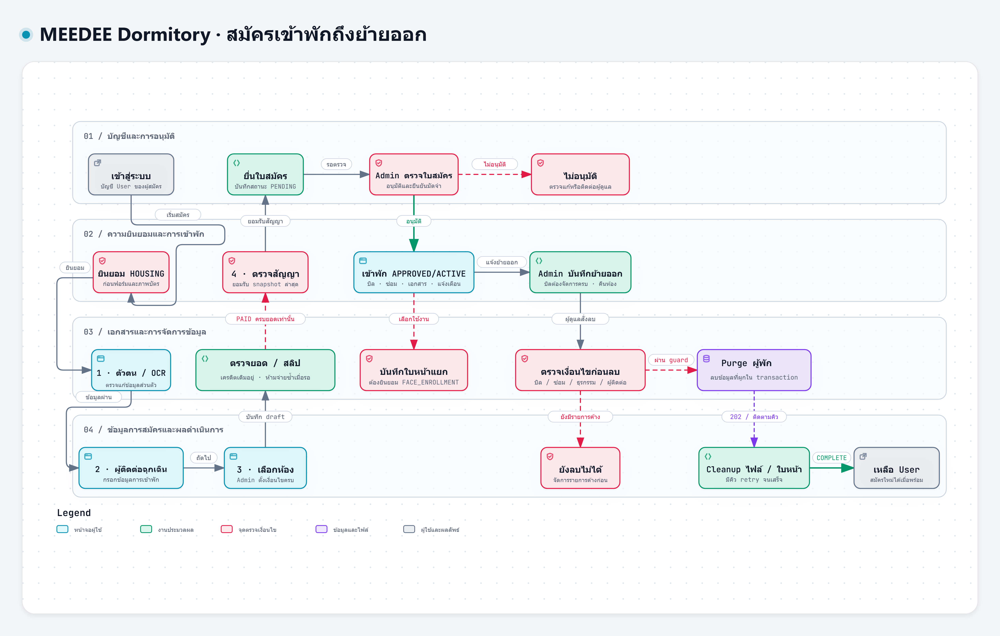
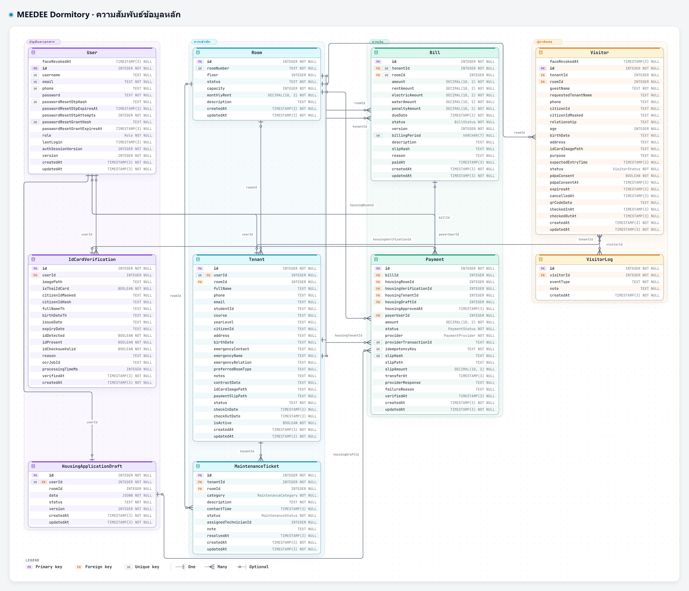
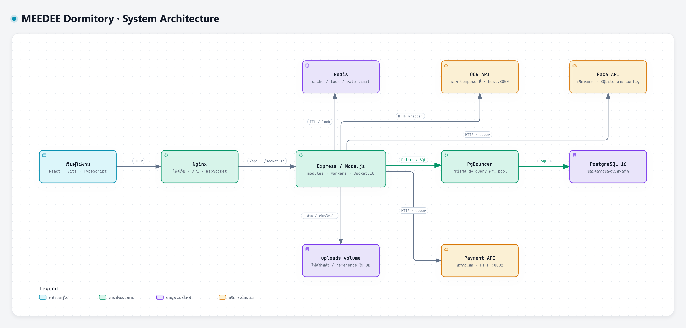

01 · ภาพรวมระบบ
ผู้ดูแล ผู้พัก และผู้มาติดต่อ ใช้งานโมดูลหอพักบนข้อมูลร่วมกัน แยกข้อมูลหลัก ไฟล์ และงานชั่วคราว
4 มุมมองจากโค้ดและ schema ของระบบเดียวกัน สร้างด้วย Archify วันที่ 16 ตุลาคม 2569 เปิด HTML เพื่อซูมและดูข้อมูลประกอบ ใช้ PNG สำหรับสไลด์ หรือ SVG สำหรับขยายและพิมพ์
เปิดฉบับลงเล่มขาวดำ — กล่องและเส้นเรียบ พร้อมดาวน์โหลด PNG/SVG ทั้ง 4 ภาพ

ผู้ดูแล ผู้พัก และผู้มาติดต่อ ใช้งานโมดูลหอพักบนข้อมูลร่วมกัน แยกข้อมูลหลัก ไฟล์ และงานชั่วคราว

ความยินยอม สมัคร ชำระ ตรวจสัญญา อนุมัติ และ guard ก่อนล้างข้อมูลจนเหลือบัญชี User

10 ตาราง 161 คอลัมน์ และ 17 FK ในขอบเขตภาพนี้ เหมาะเปิดซูมหรือใช้ SVG ส่วนรายชื่อตารางทั้ง 26 รายการและคำอธิบายอยู่ในภาคผนวก ก

เส้นทางเว็บผ่าน Nginx ไปยัง Express, workers และ Socket.IO รวมฐานข้อมูล cache ไฟล์ และ API ที่เชื่อมต่อ